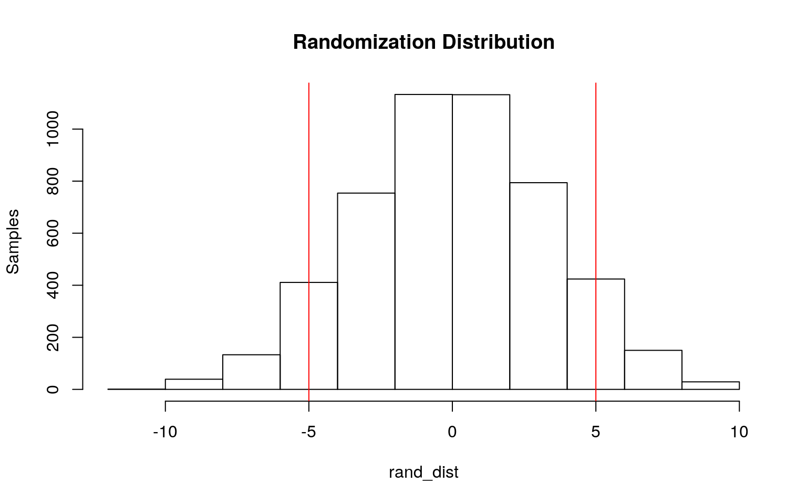

January 1, 0001
##Logistics
Introduction
I have chosen the dataset “heart” for Project 2. This dataset was acquired from the public learning community Kaggle. I was inspired to study heart health data, and their modern trends, as they continue to greatly impact our modern world and my interests in medicine. “Heart” is a dataset containing variables that effect heart health and can ultimately lead to death. For example, such variables include “age”, “anemia”, “creatinine_phosphokinase”, “diabetes”, etc. These variables are measuring how much of a certain molecule is present or the diagnosis of a health state. There are 299 observations.
library(tidyverse)
library(dplyr)
setwd("/home/kac5389/website/content/project")
heart <- read_csv("heart_failure_clinical_records_dataset.csv")
head(heart)## # A tibble: 6 x 13
## age anaemia creatinine_phos… diabetes ejection_fracti… high_blood_pres…
## <dbl> <dbl> <dbl> <dbl> <dbl> <dbl>
## 1 75 0 582 0 20 1
## 2 55 0 7861 0 38 0
## 3 65 0 146 0 20 0
## 4 50 1 111 0 20 0
## 5 65 1 160 1 20 0
## 6 90 1 47 0 40 1
## # … with 7 more variables: platelets <dbl>, serum_creatinine <dbl>,
## # serum_sodium <dbl>, sex <dbl>, smoking <dbl>, time <dbl>, DEATH_EVENT <dbl>Question 1: Manova Testing
## Df Pillai approx F num Df den Df Pr(>F)
## diabetes 1 0.010205 1.5259 2 296 0.2191
## Residuals 297## Response age :
## Df Sum Sq Mean Sq F value Pr(>F)
## diabetes 1 430 430.21 3.0617 0.08119 .
## Residuals 297 41733 140.51
## ---
## Signif. codes: 0 '***' 0.001 '**' 0.01 '*' 0.05 '.' 0.1 ' ' 1
##
## Response ejection_fraction :
## Df Sum Sq Mean Sq F value Pr(>F)
## diabetes 1 1 0.982 0.007 0.9334
## Residuals 297 41738 140.532##
## Pairwise comparisons using t tests with pooled SD
##
## data: heart$age and heart$diabetes
##
## 0
## 1 0.081
##
## P value adjustment method: none##
## Pairwise comparisons using t tests with pooled SD
##
## data: heart$ejection_fraction and heart$diabetes
##
## 0
## 1 0.93
##
## P value adjustment method: none## [1] 0.142625## [1] 0.01666667A one-way MANOVA was performed to determine the effect of the diabetes status on two dependent variables (age and ejection fraction). Significant differences were not found among the two diabetes statuses for at least one of the dependent variables, Pillai trace = 0.010205, pseudo F(2, 297) = 11.5259, p = 0.2191. For demonstration (although no significant mean difference was present), univariate ANOVAs for each dependent variable were conducted as follow-up tests to the MANOVA, using the Bonferroni method for controlling Type 1 error rates for multiple comparisons. Three total tests were performed (1 MANOVA, 2 ANOVA), and the probability of at least one type 1 error is 0.142625. To keep familywise Type 1 error rate at 0.05, a Bonferroni correction were performed, α = 0.05/3 = 0.142625. The univariate ANOVAs for Tested and Infected were not significant, F(1, 297) = 3.0617, p = 0.08119, and F(1, 49) = 0.007, p = 0.9334. Also for demonstration, post hoc analysis was performed conducting pairwise comparisions to determine which diabetes status differed in number of tested and infected individuals. Both statuses still not found to differ significantly from each other in terms of age and ejection fraction after adjusting for multiple comparisons (boneferroni α = 0.05/3 = 0.0167).
Question 2: Randomization
heart %>% group_by(diabetes) %>% filter(diabetes == 0) %>% select(ejection_fraction) %>%
sample_n(20)## # A tibble: 20 x 2
## # Groups: diabetes [1]
## diabetes ejection_fraction
## <dbl> <dbl>
## 1 0 20
## 2 0 25
## 3 0 25
## 4 0 60
## 5 0 35
## 6 0 40
## 7 0 40
## 8 0 45
## 9 0 35
## 10 0 30
## 11 0 30
## 12 0 45
## 13 0 40
## 14 0 45
## 15 0 25
## 16 0 20
## 17 0 25
## 18 0 35
## 19 0 38
## 20 0 25no_diab <- c(38, 35, 20, 25, 14, 50, 35, 40, 30, 25, 50, 45,
25, 40, 40, 35, 35, 25, 35, 45)
heart %>% group_by(diabetes) %>% filter(diabetes == 1) %>% select(ejection_fraction) %>%
sample_n(20)## # A tibble: 20 x 2
## # Groups: diabetes [1]
## diabetes ejection_fraction
## <dbl> <dbl>
## 1 1 50
## 2 1 38
## 3 1 25
## 4 1 30
## 5 1 40
## 6 1 60
## 7 1 20
## 8 1 25
## 9 1 35
## 10 1 38
## 11 1 20
## 12 1 30
## 13 1 50
## 14 1 25
## 15 1 60
## 16 1 17
## 17 1 20
## 18 1 50
## 19 1 60
## 20 1 40yes_diab <- c(38, 38, 35, 20, 40, 38, 40, 30, 38, 20, 38, 60,
50, 25, 25, 35, 25, 60, 25, 40)
mean_diff <- mean(yes_diab) - mean(no_diab)
frame <- data.frame(condition = c(rep("no_diab", 20), rep("yes_diab",
20)), time = c(no_diab, yes_diab))
head(frame)## condition time
## 1 no_diab 38
## 2 no_diab 35
## 3 no_diab 20
## 4 no_diab 25
## 5 no_diab 14
## 6 no_diab 50rand_dist <- vector()
for (i in 1:5000) {
new <- data.frame(time = sample(frame$time), condition = frame$condition)
rand_dist[i] <- mean(new[new$condition == "yes_diab", ]$time) -
mean(new[new$condition == "no_diab", ]$time)
}
{
hist(rand_dist, main = "Randomization Distribution", ylab = "Samples")
abline(v = c(-5, 5), col = "red")
} Significant differences in ejection fraction in diabetics and non-diabetics is explored above. Specifically, a randomization test was conducted to see whether there was a significant difference in mean ejection fraction between a sample diabetics (n = 20) and non-diabetics (n = 20) from the heart dataset, and the test statistic is the actual mean difference between groups (mean_diff). The null and alternative hypothesis are as follows: H0: mean ejection fraction is the same for diabetics vs. non-diabetics. HA: mean ejection fraction is different for diabetics vs. non-diabetics. The randomization distribution, with zero being the mean of the non-random distribution, demonstrates a fairly normal distribution, indicating there is a weak relationship between ejection fraction and diabetes status. The test statistic (1.8) falls within the majority of samples, or at the peak, of the randomization distribution.
Question 3: Linear Regression Model
heart$age_c <- heart$age - mean(heart$age)
fit <- lm(ejection_fraction ~ age_c * diabetes, data = heart)
summary(fit)##
## Call:
## lm(formula = ejection_fraction ~ age_c * diabetes, data = heart)
##
## Residuals:
## Min 1Q Median 3Q Max
## -23.658 -8.038 -0.812 6.469 42.342
##
## Coefficients:
## Estimate Std. Error t value Pr(>|t|)
## (Intercept) 38.10355 0.90207 42.240 <2e-16 ***
## age_c 0.02816 0.07089 0.397 0.691
## diabetes 0.08884 1.39990 0.063 0.949
## age_c:diabetes 0.09648 0.12356 0.781 0.436
## ---
## Signif. codes: 0 '***' 0.001 '**' 0.01 '*' 0.05 '.' 0.1 ' ' 1
##
## Residual standard error: 11.86 on 295 degrees of freedom
## Multiple R-squared: 0.005668, Adjusted R-squared: -0.004443
## F-statistic: 0.5606 on 3 and 295 DF, p-value: 0.6414heart %>% ggplot(aes(age_c, ejection_fraction, color = diabetes)) +
geom_point() + geom_smooth(method = "lm") + geom_vline(xintercept = mean(heart$diabetes,
na.rm = T), lty = 2)resids <- fit$residuals
fitvals <- fit$fitted.values
ggplot() + geom_point(aes(fitvals, resids)) + geom_hline(yintercept = 0,
color = "red")ggplot() + geom_histogram(aes(resids), bins = 20)ggplot() + geom_qq(aes(sample = resids)) + geom_qq_line(aes(sample = resids))library(sandwich)
library(lmtest)
bptest(fit)##
## studentized Breusch-Pagan test
##
## data: fit
## BP = 1.6613, df = 3, p-value = 0.6456shapiro.test(resids)##
## Shapiro-Wilk normality test
##
## data: resids
## W = 0.95585, p-value = 7.467e-08summary(fit)$coef[, 1:2]## Estimate Std. Error
## (Intercept) 38.10355175 0.90207175
## age_c 0.02816236 0.07088858
## diabetes 0.08884397 1.39990445
## age_c:diabetes 0.09647945 0.12355903coeftest(fit, vcov = vcovHC(fit))[, 1:2]## Estimate Std. Error
## (Intercept) 38.10355175 0.94316271
## age_c 0.02816236 0.06737188
## diabetes 0.08884397 1.38706369
## age_c:diabetes 0.09647945 0.11257602A linear regression was run to predict the effect of mean ejection fraction between diabetics and non-diabetics. The coefficient estimates predict that your ejection fraction is 38.10355 at the mean age and diabetes status. They also predict that for increasing by one unit of age your ejection fraction increases by 0.02816. They also predict that for being diabetic your ejection_fraction increases by 0.08884. The model explains a proportion of -0.004443 of the variance in my model. Assumptions of linearity, normality, and homoskedasticity were checked graphically and with hypothesis tests. Based on a scatterplot of the model, there seems to be strong linearity between the inputs and the outputs of the regression. Additionally, based on a residual plot of the model, the assumption of homoskedasticity is met, as the residuals collect in the center of the range of fitted values. This is supported by the Bresush-Pagan test, providing a p-value = 0.8661, serving to accept the null hypothesis of homoskedasticity. Lastly, based on the Q-Q plot of the model, the assumption of normality is not met, as more of the data points are collected within the middle range of fitted values. This is support bed the Shapiro-Wilk test, providing a p=value = 7.467e-08, serving to reject the null hypothesis of normality. The normal-theory SES are similar to the robust SES: SES for the normal-theory model = 0.90207175, 0.07088858, 1.39990445,0.12355903, in comparison for the robust model = 0.94316271, 0.06737188, 1.38706369, 0.11257602. The SES are not significantly different, and overall, we would not expect the p-values to change in significantly as a result.
Question 4: Bootstrapping
set.seed(348)
fit <- lm(ejection_fraction ~ age_c * diabetes, data = heart)
resids <- fit$residuals
fitted <- fit$fitted.values
boot_dat <- sample_frac(heart, replace = T)
samp_distn <- replicate(5000, {
boot_dat <- sample_frac(heart, replace = T) #take bootstrap sample of rows
fit <- lm(ejection_fraction ~ age_c * diabetes, data = boot_dat)
coef(fit) #save coefs
})
samp_distn %>% t %>% as.data.frame %>% summarize_all(sd)## (Intercept) age_c diabetes age_c:diabetes
## 1 0.9418303 0.06668204 1.384165 0.1111305coeftest(fit)[, 1:2]## Estimate Std. Error
## (Intercept) 38.10355175 0.90207175
## age_c 0.02816236 0.07088858
## diabetes 0.08884397 1.39990445
## age_c:diabetes 0.09647945 0.12355903coeftest(fit, vcov = vcovHC(fit))[, 1:2]## Estimate Std. Error
## (Intercept) 38.10355175 0.94316271
## age_c 0.02816236 0.06737188
## diabetes 0.08884397 1.38706369
## age_c:diabetes 0.09647945 0.11257602The same regression model was reran but with bootstrapped standard errors, by resampling observations. The SES of the bootstrapped model is similar to the SES of the normal-theory model: SES for the bootstrapped model = 0.94316271, 0.06737188, 1.38706369, 0.11257602, in comparison for the normal-theory model = 0.90207175, 0.07088858, 1.39990445, 0.12355903. The largest difference is between SES of the intercepts of ~0.09. Overall, we would not expect the p-values to change in significantly as a result.
Question 5: Fit a logistic regression model
fit2 <- glm(diabetes ~ age + ejection_fraction, family = "binomial",
data = heart)
coeftest(fit2)##
## z test of coefficients:
##
## Estimate Std. Error z value Pr(>|z|)
## (Intercept) 0.72521417 0.70946822 1.0222 0.30669
## age -0.01754950 0.01010533 -1.7367 0.08245 .
## ejection_fraction 0.00020591 0.00997589 0.0206 0.98353
## ---
## Signif. codes: 0 '***' 0.001 '**' 0.01 '*' 0.05 '.' 0.1 ' ' 1exp(coef(fit2))## (Intercept) age ejection_fraction
## 2.0651733 0.9826036 1.0002059probs <- predict(fit2, type = "response")
truth1 <- heart$diabetes
class_diag(probs, truth1)## acc sens spec ppv auc
## 1 0.5652174 0.016 0.9597701 0.2222222 0.5533793table(predict = as.numeric(probs > 0.5), truth = heart$diabetes) %>%
addmargins## truth
## predict 0 1 Sum
## 0 167 123 290
## 1 7 2 9
## Sum 174 125 299(2 + 167)/299 # Accuracy## [1] 0.5652174## [1] 0.5652174
(2/9) # Sensitivity/TPR## [1] 0.2222222## [1] 0.2222222
(167/290) # Specificity/TNR## [1] 0.5758621## [1] 0.5758621
(7/9) # Precision/PPV## [1] 0.7777778## [1] 0.7777778
heart$logit <- predict(fit2, type = "link")
heart %>% mutate(y = as.factor(diabetes)) %>% ggplot() + geom_density(aes(logit,
fill = y)) + geom_vline(xintercept = 0) + xlab("predictor (logit)")library(plotROC)
ROCplot <- ggplot(heart) + geom_roc(aes(d = diabetes, m = probs),
n.cuts = 0)
ROCplot
calc_auc(ROCplot)## PANEL group AUC
## 1 1 -1 0.5533793A logistic regression was performed to predict the odds of being diabetic based on the effects of age and ejection fraction. In context, the coefficient estimates predict that the log odds of being diabetic when age and ejection_fraction is zero is 2.0651733. They also predict that the log odds for getting diabetes by increasing one unit of age is 0.9826036 (p-value = 0.08245), and the log odds for getting diabetes by increasing one unit of ejection_fraction is 1.0002059 (p-value = 0.98353). Both p-values for age and ejection_fraction are p-value > 0.05, indicating that they are not statistically significant predictors for diabetes status. The proportion of correctly classified cases is an Accuracy = 0.5652174. The proportion of diabetics correctly classified is a Sensitivity (TPR) = 0.2222222. The proportion of non-diabetics status correctly is a Specificity (TNR) = 0.5758621. The proportion of classified diabetics who actually are diabetic is a Precision (PPV) = 0.7777778. Generation of an ROC cuve and calculation of AUC suggest that this model is poor at predicting new data. AUC = 0.5533793, which is a bad numeric, and indicates low separability for this model.
Question 6: Fit a logistic regression model for ALL variables
library(tidyverse)
fit3 <- glm(diabetes ~ (.), data = heart, family = "binomial")
coeftest(fit3)##
## z test of coefficients:
##
## Estimate Std. Error z value Pr(>|z|)
## (Intercept) 7.7095e+00 4.0733e+00 1.8927 0.05840 .
## age -1.5407e-02 1.0884e-02 -1.4156 0.15690
## anaemia -6.5027e-02 2.5455e-01 -0.2555 0.79837
## creatinine_phosphokinase -2.5056e-05 1.3033e-04 -0.1922 0.84755
## ejection_fraction -1.7295e-04 1.1136e-02 -0.0155 0.98761
## high_blood_pressure -9.3625e-02 2.6296e-01 -0.3560 0.72181
## platelets 1.8851e-06 1.2777e-06 1.4753 0.14013
## serum_creatinine -1.2778e-01 1.3544e-01 -0.9435 0.34544
## serum_sodium -5.1613e-02 2.9330e-02 -1.7597 0.07845 .
## sex -4.2342e-01 2.8673e-01 -1.4767 0.13975
## smoking -5.0616e-01 2.9784e-01 -1.6994 0.08924 .
## time 6.0402e-04 1.9062e-03 0.3169 0.75134
## DEATH_EVENT 1.5599e-01 3.3864e-01 0.4606 0.64506
## age_c NA NA NA NA
## logit NA NA NA NA
## ---
## Signif. codes: 0 '***' 0.001 '**' 0.01 '*' 0.05 '.' 0.1 ' ' 1exp(coef(fit3))## (Intercept) age anaemia
## 2229.4196936 0.9847108 0.9370424
## creatinine_phosphokinase ejection_fraction high_blood_pressure
## 0.9999749 0.9998271 0.9106242
## platelets serum_creatinine serum_sodium
## 1.0000019 0.8800472 0.9496967
## sex smoking time
## 0.6548040 0.6028062 1.0006042
## DEATH_EVENT age_c logit
## 1.1688140 NA NAprobs1 <- predict(fit3, type = "response")
truth1 <- heart$diabetes
class_diag(probs1, truth1)## acc sens spec ppv auc
## 1 0.6421405 0.384 0.8275862 0.6153846 0.6388046table(predict = as.numeric(probs1 > 0.5), truth = heart$diabetes) %>%
addmargins## truth
## predict 0 1 Sum
## 0 144 77 221
## 1 30 48 78
## Sum 174 125 299set.seed(348)
k = 10
data <- heart %>% sample_frac #put rows of dataset in random order
folds <- ntile(1:nrow(heart), n = 10) #create fold labels
diags <- NULL
for (i in 1:k) {
train <- heart[folds != i, ] #create training set (all but fold i)
test <- heart[folds == i, ] #create test set (just fold i)
truth <- test$diabetes #save truth labels from fold i
fit <- glm(diabetes ~ (.)^2, data = train, family = "binomial")
probs <- predict(fit, newdata = test, type = "response")
diags <- rbind(diags, class_diag(probs, truth))
}
summarize_all(diags, mean)## acc sens spec ppv auc
## 1 0.5417241 0.4768367 0.6064342 0.4411905 0.5427132library(glmnet)
set.seed(1234)
y <- as.matrix(heart$diabetes)
x <- model.matrix(diabetes ~ ., data = heart)[, -1]
head(x)## age anaemia creatinine_phosphokinase ejection_fraction high_blood_pressure
## 1 75 0 582 20 1
## 2 55 0 7861 38 0
## 3 65 0 146 20 0
## 4 50 1 111 20 0
## 5 65 1 160 20 0
## 6 90 1 47 40 1
## platelets serum_creatinine serum_sodium sex smoking time DEATH_EVENT
## 1 265000 1.9 130 1 0 4 1
## 2 263358 1.1 136 1 0 6 1
## 3 162000 1.3 129 1 1 7 1
## 4 210000 1.9 137 1 0 7 1
## 5 327000 2.7 116 0 0 8 1
## 6 204000 2.1 132 1 1 8 1
## age_c logit
## 1 14.166107 -0.5868801
## 2 -5.833893 -0.2321838
## 3 4.166107 -0.4113851
## 4 -10.833893 -0.1481426
## 5 4.166107 -0.4113851
## 6 29.166107 -0.8460044cv <- cv.glmnet(x, y, family = "binomial")
lasso <- glmnet(x, y, family = "binomial", lambda = cv$lambda.1se)
coef(lasso)## 15 x 1 sparse Matrix of class "dgCMatrix"
## s0
## (Intercept) -0.22336220
## age .
## anaemia .
## creatinine_phosphokinase .
## ejection_fraction .
## high_blood_pressure .
## platelets .
## serum_creatinine .
## serum_sodium .
## sex -0.13733231
## smoking -0.05856205
## time .
## DEATH_EVENT .
## age_c .
## logit .set.seed(348)
k = 10
data <- heart %>% sample_frac #put rows of dataset in random order
folds <- ntile(1:nrow(heart), n = 10) #create fold labels
diags <- NULL
for (i in 1:k) {
train <- heart[folds != i, ] #create training set (all but fold i)
test <- heart[folds == i, ] #create test set (just fold i)
truth <- test$diabetes #save truth labels from fold i
fit <- glm(diabetes ~ sex + smoking, data = train, family = "binomial")
probs <- predict(fit, newdata = test, type = "response")
diags <- rbind(diags, class_diag(probs, truth))
}
summarize_all(diags, mean)## acc sens spec ppv auc
## 1 0.5818391 0.4034939 0.7391214 NaN 0.59957A logistic regression was performed to predict the odds of being diabetic based on the effects of all dataset variables. In-sample classification diagnostics were collected as follows: the proportion of correctly classified cases is an Accuracy = 0.6421405. The proportion of diabetics correctly classified is a Sensitivity (TPR) = 0.384. The proportion of non-diabetics status correctly is a Specificity (TNR) = 0.8275862. The proportion of classified diabetics who actually are diabetic is a Precision (PPV) = 0.6153846, indicating this there is no predictive value to the dataset variables for being diabetic. AUC = 0.6388046, which is a bad numeric, and indicates low separability for this model. A 10-fold CV with the same model was also performed, and in-sample classification diagnostics were collected as follows: the proportion of correctly classified cases is an Accuracy = 0.5250575. The proportion of diabetics correctly classified is a Sensitivity (TPR) = 0.4618998. The proportion of non-diabetics status correctly is a Specificity (TNR) = 0.5943551. The proportion of classified diabetics who actually are diabetic is a Precision (PPV) = 0.4319974. AUC = 0.5506988. A LASSO was also performed, and the variables that are retained and are significant are sex and smoking. Following, a 10-fold CV was performed only using variables sex and smoking, and the out-of-sample AUC = 0.59957. This AUC is lower than the fit model and higher than the 10-fold model, indicating that the fit model has higher accuracy and sensitivity, despite no correction for overfitting.
Note that the echo = FALSE parameter was added to the code chunk to prevent printing of the R code that generated the plot.